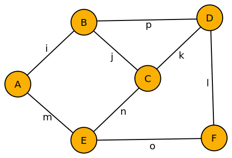

Einsum Expressions
Let's take an arbitrary tensor network like the following.
This graph is a graphical notation equivalent to the following equation.
\[\sum_{i j k l m n o p} A_{mi} B_{ijp} C_{jkn} D_{pkl} E_{mno} F_{ol}\]
A naïve implementation of this equation is easy to implement.
result = zero(reduce(promote_type, eltype.([A,B,C,D,E,F])))
for (i,j,k,l,m,n,o,p) in Iterators.product(1:I, 1:J, 1:K, 1:L, 1:M, 1:N, 1:O, 1:P)
result += A[m,i] * B[i,j,p] * C[j,k,n] * D[p,k,l] * E[m,n,o] * F[o,l]
endBut it has a cost of $\prod_\alpha \dim(\alpha)$ where $\alpha \in \{i,j,k,l,m,n,o,p\}$ which is of $\mathcal{O}(\exp(n))$ time complexity.
Basic utilities
The EinExpr type has a stable definition: it's secure to access its fields using the dot-syntax (e.g. path.head), but we recommend to use the following methods instead. They provide a much more stable API and can be used in a functional manner.
EinExprs.head — Functionhead(path::EinExpr)Return the indices of the resulting tensor from contracting path.
EinExprs.args — Functionargs(path::EinExpr)Return the children of the path, which correspond to input tensors for the contraction step in the top of the path.
See also: head.
args(sexpr::SizedEinExpr)Note
Unlike args(::EinExpr), this function returns SizedEinExpr objects.
Missing docstring for Base.size(::EinExpr). Check Documenter's build log for details.
Some other useful methods are:
Base.ndims — Methodndims(path::EinExpr)Return the number of indices of the resulting tensor from contracting path.
EinExprs.inds — Functioninds(path)Return all the involved indices in path. If a tensor is passed, then it is equivalent to calling head.
See also: head.
EinExprs.suminds — Functionsuminds(path)Indices of summation of an EinExpr.
\[\mathtt{path} \equiv \sum_{j k l m n o p} A_{mi} B_{ijp} C_{jkn} D_{pkl} E_{mno} F_{ol}\]
suminds(path) == [:j, :k, :l, :m, :n, :o, :p]EinExprs.parsuminds — Functionparsuminds(path)Indices of summation of possible pairwise tensors contractions between children of path.
EinExprs.contractorder — Functioncontractorder(path::EinExpr)Transform path into a contraction order.
EinExprs.select — Functionselect(path::EinExpr, i)Return the child elements that contain i indices.
EinExprs.neighbours — Functionneighbours(path::EinExpr, i)Return the indices neighbouring to i.
Construction by summation
One option for constructing EinExprs manually is to use the sum methods. For example, imagine that we have the following tensor equation and we want to contract first tensors $E_{mno}$ and $F_{ol}$. The resulting equation would be equivalent to adding a summatory to $E$ and $F$ as written in the right-hand side.
\[\sum_{i j k l m n o p} A_{mi} B_{ijp} C_{jkn} D_{pkl} E_{mno} F_{ol} = \sum_{i j k l m n p} A_{mi} B_{ijp} C_{jkn} D_{pkl} \sum_o E_{mno} F_{ol}\]
In EinExprs, we advocate for code that it's almost as easy as writing math. As such, one can write sum([E, F]) to create a new EinExpr where common indices are contracted or sum!(path, :o) for the in-place version where $E$ and $F$ are children of path.
Base.sum! — MethodMissing docstring for Base.sum(::EinExpr, ::Union{Symbol, Tuple{Vararg{Symbol}}, AbstractVector{<:Symbol}}). Check Documenter's build log for details.
In order to reverse the operation and unfix the contraction, the user may call the collapse! function.
EinExprs.collapse! — Functioncollapse!(path::EinExpr)Collapses all sub-branches, merging all tensor leaves into the args field.
AbstractTrees integration
EinExpr type integrates with the AbstractTrees package in order to implement some of the tree-traversing algorithms. The interface is public and thus any user can use it to implement their own methods.
For example, the AbstractTrees.Leaves function returns an iterator through the leaves of any tree; i.e. the initial tensors in our case. We implement the Branches function in order to walk through the non-terminal nodes; i.e. the intermediate tensors.
EinExprs.Branches — FunctionBranches(path::EinExpr)Iterator that walks through the non-terminal nodes of the path tree.
See also: branches.
EinExprs exports a variant of these methods which return collections.
EinExprs.leaves — Functionleaves(path::EinExpr[, i])Return the terminal leaves of the path, which correspond to the initial input tensors. If i is specified, then only return the $i$-th tensor.
See also: branches.
EinExprs.branches — Functionbranches(path::EinExpr[, i])Return the non-terminal branches of the path, which correspond to intermediate tensors result of contraction steps. If i is specified, then only return the $i$-th EinExpr.